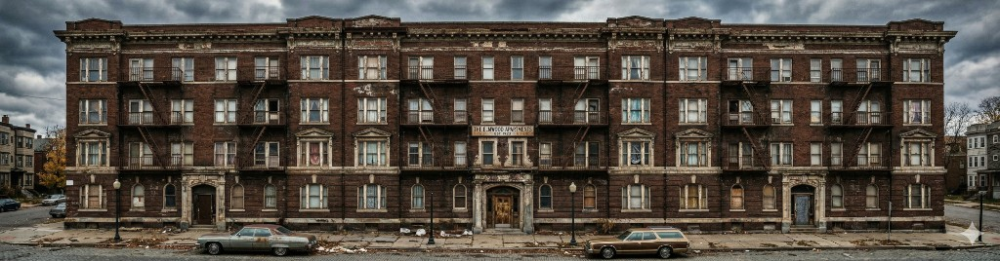

Property Owners
Property Documentation: Maximizing Value Across the Ownership Lifecycle

Multi-unit residential renovation projects face inherent risks from aging infrastructure, decades of undocumented alterations, and the necessity to integrate modern requirements for energy efficiency, safety, and code compliance. Comprehensive Existing Conditions Documentation (ECD) is a non-negotiable precursor to successful project completion and robust risk mitigation. ECD creates a stable, precisely accurate, digital "source of truth" that future-proofs assets, leading to substantial savings in time and cost, and fostering superior cross-team collaboration across the project lifecycle, from design to long-term operation.
Renovating occupied or aging multi-unit properties involves navigating complex structural hurdles, including the variety of spaces (units, common areas, mechanical rooms), and inconsistent, undocumented modifications over decades. Owners must also contend with increasingly stringent requirements for aesthetic market demands, energy efficiency, safety standards, and building code compliance. The single greatest cause of project failure and budgetary overruns is the reliance on outdated or inaccurate historical paper drawings. These deficiencies trigger costly change orders, scope creep, and on-site delays, undermining investment predictability.
The architecture, engineering, and construction (AEC) industry is adopting advanced ECD as the standard operating procedure to systematically overcome these challenges. ECD establishes an accurate "source of truth" reflecting the property's physical reality, making it an indispensable resource for investment analysts (cost modeling), designers (conflict-free planning), construction teams (minimizing site surprises), and operations staff (seamless maintenance).
ECD is a comprehensive suite of digital assets, including Building Information Models (BIM) in 3D, high-resolution photographic imagery, and measured 2D drawings. Modern ECD is generated using cutting-edge reality capture technologies, primarily 3D laser scanning (LiDAR), photogrammetry, and drone capture. The resulting "point cloud" data is dimensionally accurate to millimeter precision and captures concealed information, such as the exact location of structural elements, utility lines, and accurate floor-to-ceiling heights. This level of detail fundamentally eliminates assumption-based design.
The ECD generation process involves two steps: on-site data capture using 3D laser scanners to create a "point cloud," and off-site data processing and conversion into a detailed BIM model or 2D drawings.
While the investment in comprehensive ECD typically ranges from 0.5% to 2% of the total construction budget, it should be viewed as an insurance policy against unknown financial risks. This upfront expenditure is reliably offset by the significant time saved in design and construction and the elimination of a substantial portion of the costs traditionally attributed to change orders, rework, and field adjustments, which can easily reach 5–10% of the budget. The duration for documentation (days to weeks for scanning, plus several weeks for BIM conversion) is minimal compared to the time savings achieved in later phases.
Existing Conditions Documentation is the fundamental, data-driven investment that guarantees successful outcomes in multi-unit residential renovation. Owners and developers are strongly recommended to integrate modern ECD into the earliest stages of their projects to secure a robust, predictable, and profitable result.
Property Documentation: Maximizing Value Across the Ownership Lifecycle
Accurate plans and models fast
2D Plans, 3D models and thorough Photo Documentation
Planning for transition, growth and safety with ECD
Efficient, profitable, property operation and management with ECD
ECD: The Blueprint for Flawless Events
Cost Reduction and Risk Mitigation in Construction
An accurate foundation for success in modern landscape architecture
Renovating a multi-unit property? Discuss capture scope, BIM deliverables, and schedule with our team.
Get in TouchA comprehensive list of types of buildings, sites, and campuses Ground Truth 3D has scanned, with links to content where available.
Discuss scope, deliverables, and timeline with our team.
Get in TouchStart with a conversation about your documentation needs.
Get in Touch